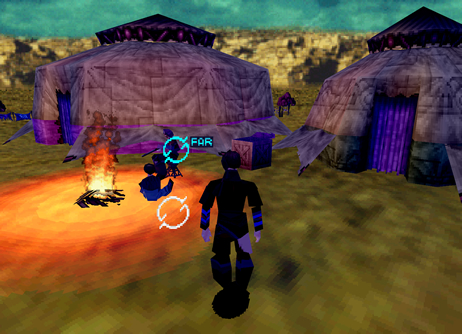

Secret and Optional NPC Dialogue
| Introduction: Using the Blue (Far) Cursor When talking to characters/npcs you will notice two different types of cursors: one yellow for up close and one blue for when you are far away. What you might not know is: you can actually listen to optional dialogue between any two npcs. All you have to do is stand far enough away from the two characters and select them with the blue (far) cursor. Each character will have something different to say, so be sure to check both of them for multiple dialoque options! There is quite a lot of hidden dialogue you can miss if you neglect to do this. And these conversations add more depth to the characters that you would otherwise miss if you failed to use this mechanic. Changing Day into Night When walking up to any main entrance you will be given the option to change day into night or vise versa. There are certain conversations you can only see at night. For example: like being able to talk to An'jou and Enkak sitting by the fire at the Caravan.
|
1. The far cursor lets you listen to optional npc dialogue! |
2. You can change the time of day at any main entrance. |
 2. Some optional conversations can only be seen at night. |